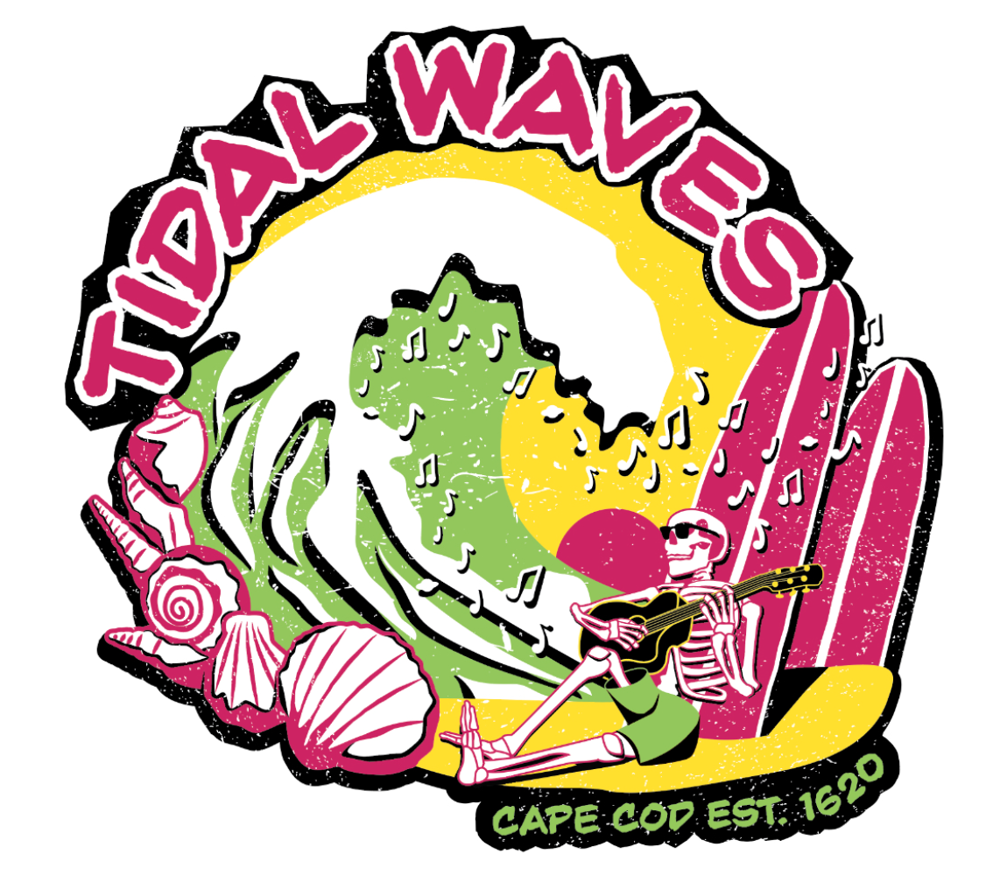
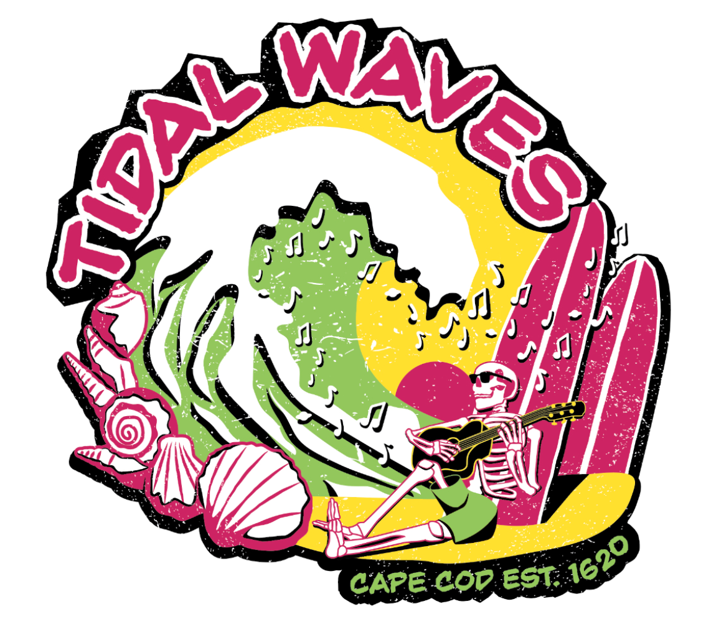

Anna Kippenberger
Tidal Waves | 2024
Made for screenpint, this design was created from a prompt to make a band shirt for Cape Cod. It was created to be a four color job on a white t-shirt.
Made for screenpint, this design was created from a prompt to make a band shirt for Cape Cod. It was created to be a four color job on a white t-shirt.
